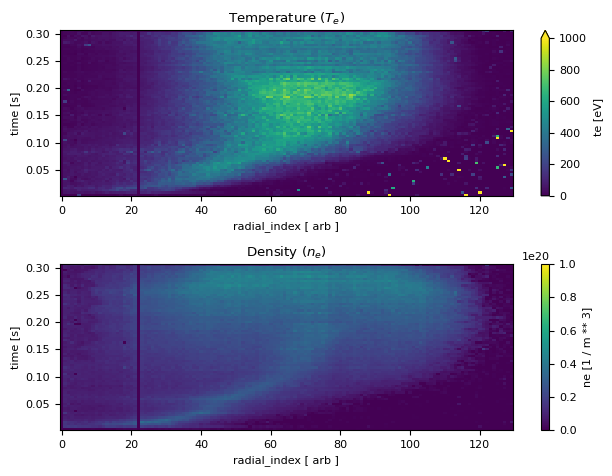

!pip install pandas matplotlib zarr fsspec s3fs intake intake_xarray intake_parquet
Show code cell output
Requirement already satisfied: pandas in /Users/rt2549/miniconda3/envs/mast-book/lib/python3.11/site-packages (2.2.2)
Requirement already satisfied: matplotlib in /Users/rt2549/miniconda3/envs/mast-book/lib/python3.11/site-packages (3.9.0)
Requirement already satisfied: zarr in /Users/rt2549/miniconda3/envs/mast-book/lib/python3.11/site-packages (2.18.2)
Requirement already satisfied: fsspec in /Users/rt2549/miniconda3/envs/mast-book/lib/python3.11/site-packages (2024.6.0)
Requirement already satisfied: s3fs in /Users/rt2549/miniconda3/envs/mast-book/lib/python3.11/site-packages (2024.6.0)
Requirement already satisfied: intake in /Users/rt2549/miniconda3/envs/mast-book/lib/python3.11/site-packages (2.0.5)
Requirement already satisfied: intake_xarray in /Users/rt2549/miniconda3/envs/mast-book/lib/python3.11/site-packages (0.7.0)
Requirement already satisfied: intake_parquet in /Users/rt2549/miniconda3/envs/mast-book/lib/python3.11/site-packages (0.3.0)
Requirement already satisfied: numpy>=1.23.2 in /Users/rt2549/miniconda3/envs/mast-book/lib/python3.11/site-packages (from pandas) (1.26.4)
Requirement already satisfied: python-dateutil>=2.8.2 in /Users/rt2549/miniconda3/envs/mast-book/lib/python3.11/site-packages (from pandas) (2.9.0)
Requirement already satisfied: pytz>=2020.1 in /Users/rt2549/miniconda3/envs/mast-book/lib/python3.11/site-packages (from pandas) (2024.1)
Requirement already satisfied: tzdata>=2022.7 in /Users/rt2549/miniconda3/envs/mast-book/lib/python3.11/site-packages (from pandas) (2024.1)
Requirement already satisfied: contourpy>=1.0.1 in /Users/rt2549/miniconda3/envs/mast-book/lib/python3.11/site-packages (from matplotlib) (1.2.1)
Requirement already satisfied: cycler>=0.10 in /Users/rt2549/miniconda3/envs/mast-book/lib/python3.11/site-packages (from matplotlib) (0.12.1)
Requirement already satisfied: fonttools>=4.22.0 in /Users/rt2549/miniconda3/envs/mast-book/lib/python3.11/site-packages (from matplotlib) (4.53.0)
Requirement already satisfied: kiwisolver>=1.3.1 in /Users/rt2549/miniconda3/envs/mast-book/lib/python3.11/site-packages (from matplotlib) (1.4.5)
Requirement already satisfied: packaging>=20.0 in /Users/rt2549/miniconda3/envs/mast-book/lib/python3.11/site-packages (from matplotlib) (24.1)
Requirement already satisfied: pillow>=8 in /Users/rt2549/miniconda3/envs/mast-book/lib/python3.11/site-packages (from matplotlib) (10.3.0)
Requirement already satisfied: pyparsing>=2.3.1 in /Users/rt2549/miniconda3/envs/mast-book/lib/python3.11/site-packages (from matplotlib) (3.1.2)
Requirement already satisfied: asciitree in /Users/rt2549/miniconda3/envs/mast-book/lib/python3.11/site-packages (from zarr) (0.3.3)
Requirement already satisfied: numcodecs>=0.10.0 in /Users/rt2549/miniconda3/envs/mast-book/lib/python3.11/site-packages (from zarr) (0.12.1)
Requirement already satisfied: fasteners in /Users/rt2549/miniconda3/envs/mast-book/lib/python3.11/site-packages (from zarr) (0.19)
Requirement already satisfied: aiobotocore<3.0.0,>=2.5.4 in /Users/rt2549/miniconda3/envs/mast-book/lib/python3.11/site-packages (from s3fs) (2.13.0)
Requirement already satisfied: aiohttp!=4.0.0a0,!=4.0.0a1 in /Users/rt2549/miniconda3/envs/mast-book/lib/python3.11/site-packages (from s3fs) (3.9.5)
Requirement already satisfied: pyyaml in /Users/rt2549/miniconda3/envs/mast-book/lib/python3.11/site-packages (from intake) (6.0.1)
Requirement already satisfied: appdirs in /Users/rt2549/miniconda3/envs/mast-book/lib/python3.11/site-packages (from intake) (1.4.4)
Requirement already satisfied: xarray>=02022 in /Users/rt2549/miniconda3/envs/mast-book/lib/python3.11/site-packages (from intake_xarray) (2024.5.0)
Requirement already satisfied: dask>=2.2 in /Users/rt2549/miniconda3/envs/mast-book/lib/python3.11/site-packages (from intake_xarray) (2024.5.2)
Requirement already satisfied: netcdf4 in /Users/rt2549/miniconda3/envs/mast-book/lib/python3.11/site-packages (from intake_xarray) (1.6.5)
Requirement already satisfied: msgpack in /Users/rt2549/miniconda3/envs/mast-book/lib/python3.11/site-packages (from intake_xarray) (1.0.8)
Requirement already satisfied: requests in /Users/rt2549/miniconda3/envs/mast-book/lib/python3.11/site-packages (from intake_xarray) (2.32.3)
Requirement already satisfied: fastparquet in /Users/rt2549/miniconda3/envs/mast-book/lib/python3.11/site-packages (from intake_parquet) (2024.5.0)
Requirement already satisfied: pyarrow in /Users/rt2549/miniconda3/envs/mast-book/lib/python3.11/site-packages (from intake_parquet) (16.1.0)
Requirement already satisfied: botocore<1.34.107,>=1.34.70 in /Users/rt2549/miniconda3/envs/mast-book/lib/python3.11/site-packages (from aiobotocore<3.0.0,>=2.5.4->s3fs) (1.34.106)
Requirement already satisfied: wrapt<2.0.0,>=1.10.10 in /Users/rt2549/miniconda3/envs/mast-book/lib/python3.11/site-packages (from aiobotocore<3.0.0,>=2.5.4->s3fs) (1.16.0)
Requirement already satisfied: aioitertools<1.0.0,>=0.5.1 in /Users/rt2549/miniconda3/envs/mast-book/lib/python3.11/site-packages (from aiobotocore<3.0.0,>=2.5.4->s3fs) (0.11.0)
Requirement already satisfied: aiosignal>=1.1.2 in /Users/rt2549/miniconda3/envs/mast-book/lib/python3.11/site-packages (from aiohttp!=4.0.0a0,!=4.0.0a1->s3fs) (1.3.1)
Requirement already satisfied: attrs>=17.3.0 in /Users/rt2549/miniconda3/envs/mast-book/lib/python3.11/site-packages (from aiohttp!=4.0.0a0,!=4.0.0a1->s3fs) (23.2.0)
Requirement already satisfied: frozenlist>=1.1.1 in /Users/rt2549/miniconda3/envs/mast-book/lib/python3.11/site-packages (from aiohttp!=4.0.0a0,!=4.0.0a1->s3fs) (1.4.1)
Requirement already satisfied: multidict<7.0,>=4.5 in /Users/rt2549/miniconda3/envs/mast-book/lib/python3.11/site-packages (from aiohttp!=4.0.0a0,!=4.0.0a1->s3fs) (6.0.5)
Requirement already satisfied: yarl<2.0,>=1.0 in /Users/rt2549/miniconda3/envs/mast-book/lib/python3.11/site-packages (from aiohttp!=4.0.0a0,!=4.0.0a1->s3fs) (1.9.4)
Requirement already satisfied: click>=8.1 in /Users/rt2549/miniconda3/envs/mast-book/lib/python3.11/site-packages (from dask>=2.2->intake_xarray) (8.1.7)
Requirement already satisfied: cloudpickle>=1.5.0 in /Users/rt2549/miniconda3/envs/mast-book/lib/python3.11/site-packages (from dask>=2.2->intake_xarray) (3.0.0)
Requirement already satisfied: partd>=1.2.0 in /Users/rt2549/miniconda3/envs/mast-book/lib/python3.11/site-packages (from dask>=2.2->intake_xarray) (1.4.2)
Requirement already satisfied: toolz>=0.10.0 in /Users/rt2549/miniconda3/envs/mast-book/lib/python3.11/site-packages (from dask>=2.2->intake_xarray) (0.12.1)
Requirement already satisfied: importlib-metadata>=4.13.0 in /Users/rt2549/miniconda3/envs/mast-book/lib/python3.11/site-packages (from dask>=2.2->intake_xarray) (7.1.0)
Requirement already satisfied: six>=1.5 in /Users/rt2549/miniconda3/envs/mast-book/lib/python3.11/site-packages (from python-dateutil>=2.8.2->pandas) (1.16.0)
Requirement already satisfied: cramjam>=2.3 in /Users/rt2549/miniconda3/envs/mast-book/lib/python3.11/site-packages (from fastparquet->intake_parquet) (2.8.3)
Requirement already satisfied: cftime in /Users/rt2549/miniconda3/envs/mast-book/lib/python3.11/site-packages (from netcdf4->intake_xarray) (1.6.4)
Requirement already satisfied: certifi in /Users/rt2549/miniconda3/envs/mast-book/lib/python3.11/site-packages (from netcdf4->intake_xarray) (2024.6.2)
Requirement already satisfied: charset-normalizer<4,>=2 in /Users/rt2549/miniconda3/envs/mast-book/lib/python3.11/site-packages (from requests->intake_xarray) (3.3.2)
Requirement already satisfied: idna<4,>=2.5 in /Users/rt2549/miniconda3/envs/mast-book/lib/python3.11/site-packages (from requests->intake_xarray) (3.7)
Requirement already satisfied: urllib3<3,>=1.21.1 in /Users/rt2549/miniconda3/envs/mast-book/lib/python3.11/site-packages (from requests->intake_xarray) (2.2.1)
Requirement already satisfied: jmespath<2.0.0,>=0.7.1 in /Users/rt2549/miniconda3/envs/mast-book/lib/python3.11/site-packages (from botocore<1.34.107,>=1.34.70->aiobotocore<3.0.0,>=2.5.4->s3fs) (1.0.1)
Requirement already satisfied: zipp>=0.5 in /Users/rt2549/miniconda3/envs/mast-book/lib/python3.11/site-packages (from importlib-metadata>=4.13.0->dask>=2.2->intake_xarray) (3.19.2)
Requirement already satisfied: locket in /Users/rt2549/miniconda3/envs/mast-book/lib/python3.11/site-packages (from partd>=1.2.0->dask>=2.2->intake_xarray) (1.0.0)
import intake
import matplotlib.pyplot as plt
plt.rcParams["font.family"] = "sans"
plt.rcParams["font.size"] = 8
First let’s take a look at the top level shots. In this table we can find all of the metadata we have about particular shots.
catalog = intake.open_catalog('https://mastapp.site/intake/catalog.yml')
shots_df = catalog.index.level1.shots().read()
shots_df
| url | preshot_description | postshot_description | campaign | current_range | divertor_config | plasma_shape | comissioner | facility | shot_id | ... | cpf_vol_ipmax | cpf_vol_max | cpf_vol_truby | cpf_wmhd_ipmax | cpf_wmhd_max | cpf_wmhd_truby | cpf_zeff_ipmax | cpf_zeff_max | cpf_zeff_truby | cpf_zmag_efit | |
|---|---|---|---|---|---|---|---|---|---|---|---|---|---|---|---|---|---|---|---|---|---|
| 0 | s3://mast/level1/shots/11695.zarr | \n0.1T TF SHOT\n | \nOK\n | M5 | None | Conventional | None | None | MAST | 11695 | ... | NaN | NaN | NaN | NaN | NaN | NaN | None | None | None | NaN |
| 1 | s3://mast/level1/shots/11696.zarr | \nSTANDARD 0.3T TF SHOT\n | \nOK\n | M5 | None | Conventional | None | None | MAST | 11696 | ... | NaN | NaN | NaN | NaN | NaN | NaN | None | None | None | NaN |
| 2 | s3://mast/level1/shots/11697.zarr | \nRAISE TO 0.5T\n | \nOK, ALARMS ARE LOWER\n | M5 | None | Conventional | None | None | MAST | 11697 | ... | NaN | NaN | NaN | NaN | NaN | NaN | None | None | None | NaN |
| 3 | s3://mast/level1/shots/11698.zarr | \nRAISE TO .56T\n | \nSTILL ALARMS BUT LOWER AGAIN\n | M5 | None | Conventional | None | None | MAST | 11698 | ... | NaN | NaN | NaN | NaN | NaN | NaN | None | None | None | NaN |
| 4 | s3://mast/level1/shots/11699.zarr | \nRAISE TO .58T\n | \nOK\n | M5 | None | Conventional | None | None | MAST | 11699 | ... | NaN | NaN | NaN | NaN | NaN | NaN | None | None | None | NaN |
| ... | ... | ... | ... | ... | ... | ... | ... | ... | ... | ... | ... | ... | ... | ... | ... | ... | ... | ... | ... | ... | ... |
| 15548 | s3://mast/level1/shots/30467.zarr | \nRepeat with new neutron camera position.\ncH... | \nTwo times lower DD neutron rate than referen... | M9 | 700 kA | Conventional | Connected Double Null | None | MAST | 30467 | ... | 9.029202 | 9.046394 | 0.0 | 49469.122469 | 52653.445 | 0.0 | None | None | None | 0.013202 |
| 15549 | s3://mast/level1/shots/30468.zarr | \nRepeat with new neutron camera position.\ncH... | \nGood beam.\nGood repeat.\n | M9 | 700 kA | Conventional | Lower Single Null | None | MAST | 30468 | ... | 9.102411 | 9.107017 | 0.0 | 48516.962675 | 49382.133 | 0.0 | None | None | None | 0.012445 |
| 15550 | s3://mast/level1/shots/30469.zarr | \nRepeat with increased beam power (74 kV)\ncH... | \nGood shot. Modes present.\n | M9 | 700 kA | Conventional | Connected Double Null | None | MAST | 30469 | ... | 8.988730 | 9.047923 | 0.0 | 47466.249616 | 49115.805 | 0.0 | None | None | None | 0.015299 |
| 15551 | s3://mast/level1/shots/30470.zarr | \nRepeat last using hydrogen in outboard and c... | \nNo HF gas.\n | M9 | 700 kA | Conventional | None | None | MAST | 30470 | ... | 9.687049 | 10.055509 | 0.0 | 17290.432865 | 22310.516 | 0.0 | None | None | None | 0.015164 |
| 15552 | s3://mast/level1/shots/30471.zarr | \nThe last plasma:\nConvert to i/b Helios 1724... | \nGood shot.\n | M9 | 700 kA | Conventional | Lower Single Null | None | MAST | 30471 | ... | 8.817559 | 9.283702 | 0.0 | 38063.582380 | 40906.090 | 0.0 | None | None | None | 0.014340 |
15553 rows × 282 columns
Thomson Scattering Data#
This notebook contains some examples of loading and plotting Thomson scattering data.
First we can have a look at how many thompson scattering sources are in the database:
catalog = intake.open_catalog('https://mastapp.site/intake/catalog.yml')
sources_df = catalog.index.level1.sources().read()
# Can also use name == 'aye' for thompson scattering edge data.
sources_df = sources_df.loc[(sources_df.name == 'ayc')]
sources_df
| description | quality | uuid | shot_id | name | url | |
|---|---|---|---|---|---|---|
| 36519 | Core Thomson scattering data | Not Checked | a61fdefa-e7e9-57df-a7f3-a341f737bcdd | 23001 | ayc | s3://mast/level1/shots/23001.zarr/ayc |
| 36574 | Core Thomson scattering data | Not Checked | a654a084-97f5-52f5-99d6-4e726880b39a | 23018 | ayc | s3://mast/level1/shots/23018.zarr/ayc |
| 36732 | Core Thomson scattering data | Not Checked | 3cca7bc2-9c91-5bd9-a1cd-939142a84cd2 | 23133 | ayc | s3://mast/level1/shots/23133.zarr/ayc |
| 36742 | Core Thomson scattering data | Not Checked | 6fd9ab2f-ca5f-57a2-ba81-589cf6efe7d5 | 23135 | ayc | s3://mast/level1/shots/23135.zarr/ayc |
| 36747 | Core Thomson scattering data | Not Checked | 5334374c-8f9a-5437-aa56-822448ea5d27 | 23136 | ayc | s3://mast/level1/shots/23136.zarr/ayc |
| ... | ... | ... | ... | ... | ... | ... |
| 99004 | Core Thomson scattering data | Not Checked | 1d345219-99c7-5725-9d65-2c9d455b629c | 30467 | ayc | s3://mast/level1/shots/30467.zarr/ayc |
| 99019 | Core Thomson scattering data | Not Checked | 9ac2f540-8845-5c5a-8932-7634b7834d40 | 30468 | ayc | s3://mast/level1/shots/30468.zarr/ayc |
| 99034 | Core Thomson scattering data | Not Checked | d07dc339-1510-525c-9fa9-015900101656 | 30469 | ayc | s3://mast/level1/shots/30469.zarr/ayc |
| 99049 | Core Thomson scattering data | Not Checked | fa9b2d5d-348b-5e00-a4d5-fc5e39d75452 | 30470 | ayc | s3://mast/level1/shots/30470.zarr/ayc |
| 99064 | Core Thomson scattering data | Not Checked | 113ec983-6e14-5e41-8111-aadb0f744471 | 30471 | ayc | s3://mast/level1/shots/30471.zarr/ayc |
4665 rows × 6 columns
Let’s look at the data for a particular shot. Here we are going to use shot 30420 as an example. Below we get the url for the ayc data.
shot_id = 30420
url = sources_df.loc[sources_df.shot_id == shot_id].iloc[0].url
url
's3://mast/level1/shots/30420.zarr/ayc'
Thomson Scattering Data#
ayc source holds the Thomson Scattering data at the core. Thomson scattering diagnostics provide accurate measurements of electron temperature and density.
dataset = catalog.level1.sources(url=url)
dataset = dataset.to_dask()
dataset
/Users/rt2549/miniconda3/envs/mast-book/lib/python3.11/site-packages/intake_xarray/base.py:21: FutureWarning: The return type of `Dataset.dims` will be changed to return a set of dimension names in future, in order to be more consistent with `DataArray.dims`. To access a mapping from dimension names to lengths, please use `Dataset.sizes`.
'dims': dict(self._ds.dims),
<xarray.Dataset> Size: 1MB
Dimensions: (acqiris_time: 73, radial_index: 130, arb: 130,
time: 73, spectral_index: 4, instrument_time: 20,
xyc_time: 73)
Coordinates:
* acqiris_time (acqiris_time) float32 292B 0.0 1.0 2.0 ... 71.0 72.0
* arb (arb) float32 520B 0.0 1.0 2.0 ... 127.0 128.0 129.0
* instrument_time (instrument_time) float32 80B 1.0 2.0 3.0 ... 19.0 20.0
* radial_index (radial_index) float32 520B 0.0 1.0 2.0 ... 128.0 129.0
* spectral_index (spectral_index) float32 16B 1.0 2.0 3.0 4.0
* time (time) float32 292B 0.004166 0.008332 ... 0.3 0.3042
* xyc_time (xyc_time) float32 292B 0.0 1.0 2.0 ... 70.0 71.0 72.0
Data variables: (12/36)
acqiris_time_ (acqiris_time) float32 292B dask.array<chunksize=(73,), meta=np.ndarray>
angle (radial_index) float32 520B dask.array<chunksize=(130,), meta=np.ndarray>
aspectra (time, radial_index, spectral_index) float32 152kB dask.array<chunksize=(73, 130, 4), meta=np.ndarray>
chi2 (time, radial_index) float32 38kB dask.array<chunksize=(73, 130), meta=np.ndarray>
covariance_ne_te (time, radial_index) float32 38kB dask.array<chunksize=(73, 130), meta=np.ndarray>
instrument_dr (instrument_time, radial_index) float32 10kB dask.array<chunksize=(20, 130), meta=np.ndarray>
... ...
te_error (time, radial_index) float32 38kB dask.array<chunksize=(73, 130), meta=np.ndarray>
version_fibre float32 4B ...
version_poly float32 4B ...
version_raman float32 4B ...
xyc_time_ (xyc_time) float32 292B dask.array<chunksize=(73,), meta=np.ndarray>
yag_nelint (time) float32 292B dask.array<chunksize=(73,), meta=np.ndarray>
Attributes:
description: Core Thomson scattering data
file_name: ayc0304.20
format: IDA3
mds_name: None
name: ayc
quality: Not Checked
shot_id: 30420
signal_type: Analysed
source: ayc
uda_name: AYC
uuid: 8d043ece-8bf8-5af8-87e4-d2a1b01716fa
version: 0fig, axes = plt.subplots(2,1)
ax1, ax2 = axes
ax1.plot(dataset['time'], dataset['te_core'])
ax1.set_xlabel('Time (s)')
ax1.set_ylabel('Core Temperature (eV)')
ax2.plot(dataset['time'], dataset['ne_core'])
ax2.set_xlabel('Time (s)')
ax2.set_ylabel('Peak Core Electron Density ($1 / m^3$)')
for ax in axes:
ax.grid(alpha=0.3)
plt.tight_layout()

2D Thomson Profiles#
The dataset also includes 2D Thomson scattering profles as a function of time and angle/distance.
fig, (ax1, ax2) = plt.subplots(2, 1)
dataset = catalog.level1.sources(url=url)
dataset = dataset.to_dask()
tmax = dataset['te_core'].dropna(dim='time').time.max()
ds = dataset.copy()
te = ds['te']
te = te.sel(time=te.time <= tmax)
te = te.fillna(0)
te.plot.imshow(ax=ax1, vmax=1000)
ax1.set_title('Temperature ($T_e$)')
ne = ds['ne']
ne = ne.sel(time=ne.time <= tmax)
ne = ne.fillna(0)
ne.plot.imshow(ax=ax2, vmax=1e20)
ax2.set_title('Density ($n_e$)')
ax1.grid(False)
ax2.grid(False)
plt.tight_layout()
